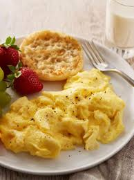

Scrambled Eggs

Description
The world is a mysterious place. Things grow, and die,
only to grow again. Life is no more a blessing than it is a curse; suffering
is inevitable and expected, yet those equipped with the capacity to
understand this wild dance choose instead to bury their heads in the sand. Steeling
oneself against the cold truth of the clouds, and the stars, and looking defiantly
into the heart of the feeble - that is living.
This is a recipe for scrambled eggs!
Ingredients
- Eggs
- Butter
- Salt
- Eggs
- Milk
- Eggs
- A warrior's spirit
- Gumption
- Eggs
- A hectare of wild wormwood
- Shredded cheese
Steps
- Crack your eggs, eggs, eggs, and eggs into a ten-inch frying pan.
- Using a whisk, kill your detractors to stem dissent at the source.
- On medium heat, use your bare hands to maim an elderly goat.
- Sprinkle a fine layer of shredded cheese on top.
- Flail desperately against the current as you slowly whisk in a quarter cup of milk.
- Swallow your bulbous, infected tongue.
- Season to taste.
Back to home